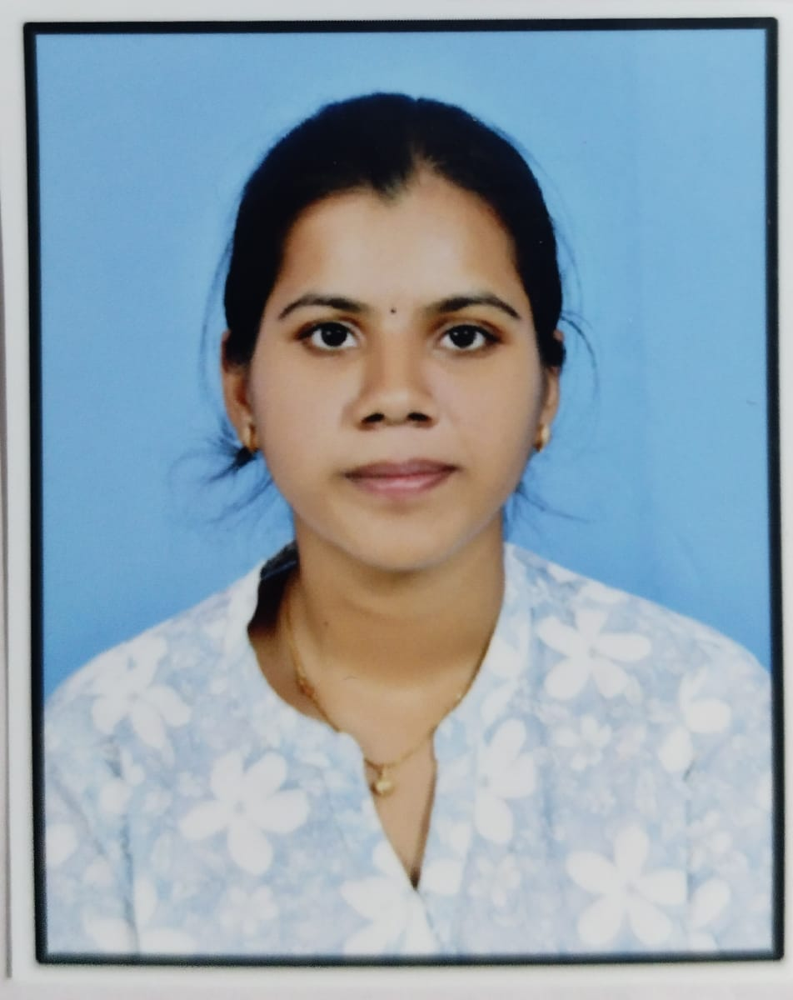

B.tech | Electroinics and Communiaction Engineering

I am currently pursuing a Bachelor of Technology (B.Tech) in Electronics and Communication Engineering (ECE). I am passionate about web development and continuously improving my programming and problem-solving skills. I enjoy working on projects related to software development, artificial intelligence, and modern web technologies. I am eager to apply my knowledge to real-world applications and contribute to innovative technological solutions.
Developed a real-time object detection system using the YOLO (You Only Look Once) algorithm and Python. The system is capable of identifying and locating multiple objects in images and video streams with high accuracy and speed. OpenCV was used for image processing and visualization, while pre-trained YOLO models were utilized for object recognition. The project demonstrates the application of computer vision and deep learning techniques for real-time object detection in various environments.
Built a system that recognizes sign language gestures and converts them into readable text.
Developed a full stack web application using React, Node.js, Express, and MongoDB.
Email: aishvithaganapuram@gmail.com
Phone: +91 9052977526
GitHub: https://github.com/aishvitha-7526
LinkedIn: https://www.linkedin.com/in/aishvitha-ganapuram-412aa0327/